Avoin suomalainen kaupunkidata
Välineet, haasteet ja tulevaisuus
Kaupunkitutkimuksen päivät 3.5.2012
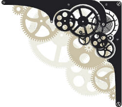
Keitä me olemme?
Leo Lahti
- Tutkija, Wageningenin yliopisto
Juuso Parkkinen
- Tutkija, Aalto-yliopisto
Joona Lehtomäki
- Tutkija, Helsingin yliopisto
Keitä me olemme?
Avoin data
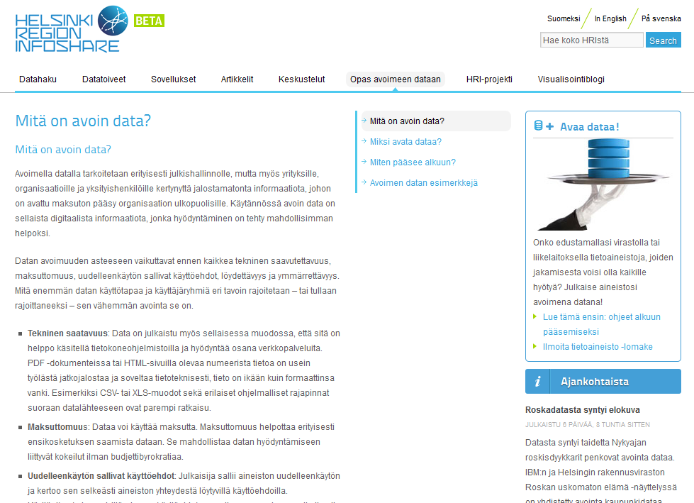
Määritelmä
Tekninen saatavuus
Maksuttomuus
Uudelleenkäytön sallivat käyttöehdot
Löydettävyys
Ymmärrettävyys
Haasteet
Tietoa on paljon, mutta
hajallaan
ja
eri formaateissa
Tiedon
esiprosessointi
ja
yhdistely
voi olla hankalaa
Eri työvaiheet tehtävä usein eri työkaluilla
Analyysien
avoimuus
ja
toistettavuus
so
R
vi
Datan, algoritmien ja sovellusten kohtaamispisteessä
Avointa koodia avoimelle datalle
so
R
vi
Valmiit
haku- ja esikäsittelyrutiinit
Vuorovaikutteinen
tiedonlouhinta
Analyysien
avoimuus
ja
toistettavuus
Siltana datasta sovelluksiin
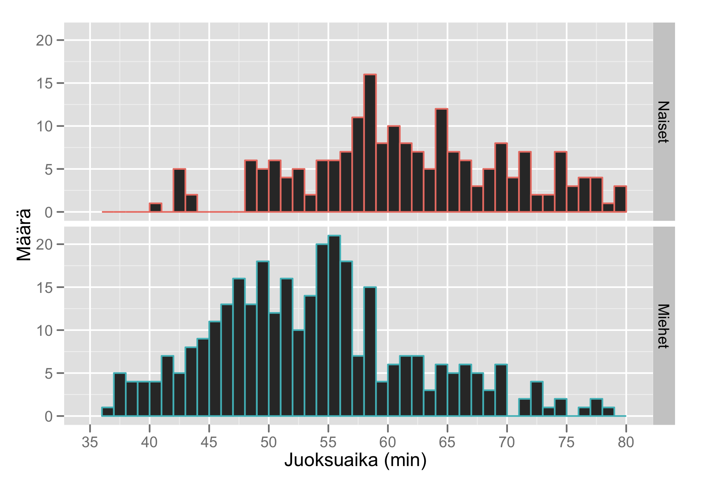
Miksi R?
http://cran.r-project.org
Vuorovaikutteinen ja modulaarinen (avoin data, tilastotiede, visualisointi)
Tuhansia analyysimenetelmiä
Grafiikkaominaisuudet
Lähde: wrathematics @ librestats (http://librestats.com/)
Miksi R?
http://cran.r-project.org
Vuorovaikutteinen ja modulaarinen (avoin data, tilastotiede, visualisointi)
Tuhansia analyysimenetelmiä
Grafiikkaominaisuudet
Avoin lähdekoodi sekä laaja käyttäjä- ja kehittäjäyhteisö
Miksi R?
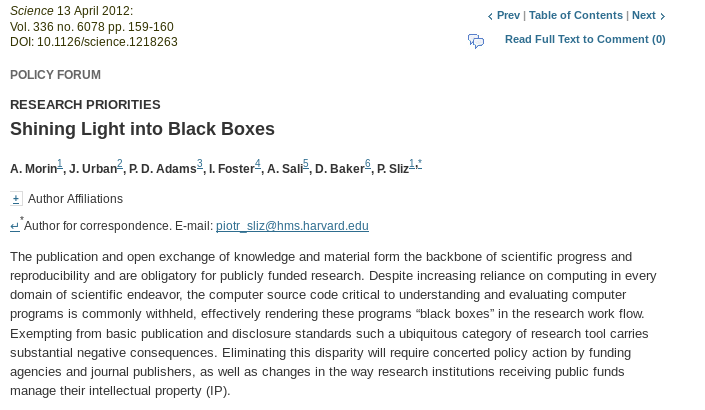
Toistettavuus
ja
läpinäkyvyys
tutkimuksessa
Louhos-
blogi
Nämä esimerkit ja paljon muuta osoitteessa
https://louhos.wordpress.com/
Uusi kuntajako: yhdistely ja visualisointi
Datat:
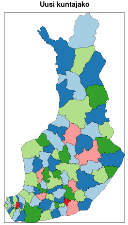
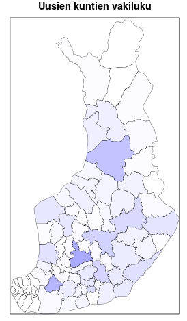
HSY/HRI ja paikkatiedot pääkaupunkiseudulla
Datat:
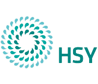
Väestöruudukko
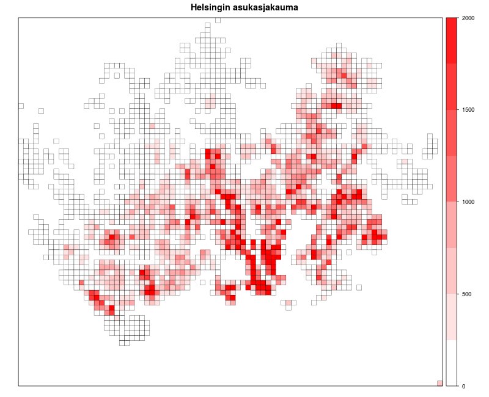
HSY/HRI ja paikkatiedot pääkaupunkiseudulla
Datat:
SeutuRAMAVA
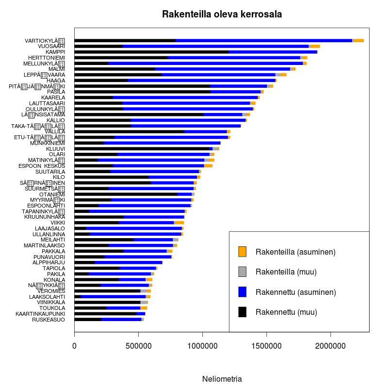
Presidenttiehdokkaiden kannatus ja suomalaisten hyvinvointi
Datat:
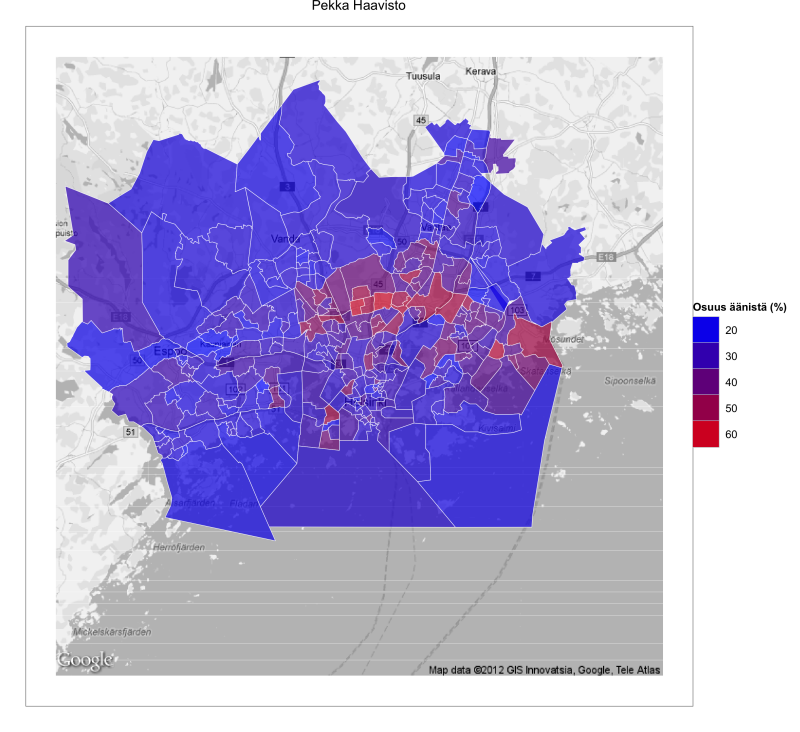
Not available
Puisto Guide
Datat:
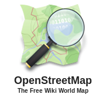
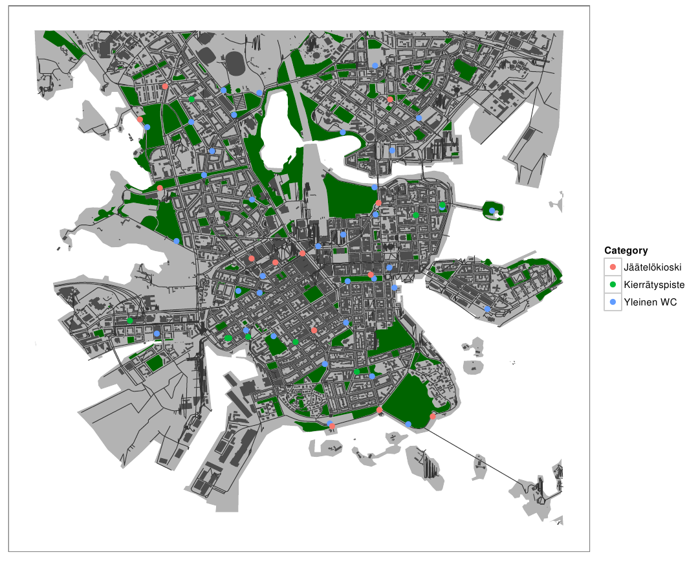
Tulevaisuus
Kehitystyötä, yhteisöä ja yhteistyötä
Not available
Tutkimusyhteistyö
Valmista R-koodia? Paketoidaan ja julkaistaan se!
Mielenkiintoiset tutkimuskysymykset
Opinnäytetyö
Kirjoita Louhos-blogiin
Kiitos!
Apps4Finland
Helsinki Region Infoshare
Forum Virium Helsinki
Datan avaajat (MML, HSY, Tilastokeskus)
R-kehittäjät, avoimen datan yhteisö
Lisätietoja:
https://github.com/louhos
←
→
/
Go to slide:
#